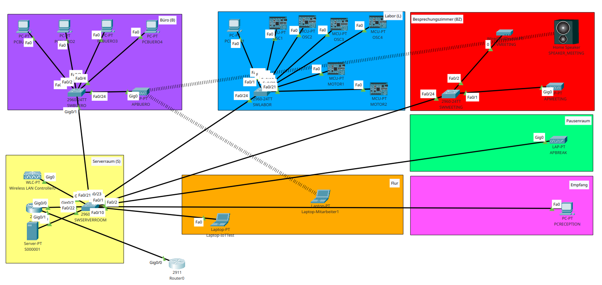

Projektarbeit Netzwerk Dokumentation
Table of Contents
- 1. MAC-Adressen-Tabellen
- 2. Routingtabelle RTR1
- 3. Netze und ihre Eigenschaften
- 4. IP-Adressen
- 5. Aufbau des Netzwerks
- 6. Dokumentation der ausgeführten Aktionen
- 6.1. Allgemein
- 6.2. SWSERVERROOM
- 6.3. SWLABOR
- 6.4. SWBUERO
- 6.5. SWMEETING
- 6.6. RTR1
- 6.7. SERVER1
- 6.8. Alle Enddevices (PCx, OSCx, MOTORx, TVx)
- 6.9. Wireless LAN Controller
- 6.10. SPEAKER_MEETING
- 6.11. Simuliertes Internet 8.8.8.8
- 6.12. Simuliertes Mitarbeiternotebook
- 6.13. Simuliertes Notebook im VLAN 20 (IoT-Netz)
1. MAC-Adressen-Tabellen
1.1. SWSERVERROOM
SWSERVERROOM#show mac-address-table
Mac Address Table
-------------------------------------------
Vlan Mac Address Type Ports
---- ----------- -------- -----
10 0001.43b8.6c01 DYNAMIC Gig0/2
10 0001.64be.b617 DYNAMIC Fa0/2
10 0001.c963.aae3 DYNAMIC Gig0/1
10 0006.2a52.5372 DYNAMIC Gig0/1
10 0090.2b11.6254 DYNAMIC Gig0/1
10 00d0.bcbe.b68a DYNAMIC Fa0/22
10 00e0.8f60.9dcd DYNAMIC Fa0/23
10 00e0.f758.668e DYNAMIC Gig0/1
20 0001.43b8.6c01 DYNAMIC Gig0/2
20 0001.43eb.baea DYNAMIC Fa0/23
20 0001.97d4.3b62 DYNAMIC Fa0/23
20 0004.9a2a.0553 DYNAMIC Fa0/23
20 0007.ec9b.9670 DYNAMIC Fa0/23
20 0040.0b5a.7743 DYNAMIC Fa0/23
20 00e0.f7eb.7845 DYNAMIC Fa0/23
30 0001.43b8.6c01 DYNAMIC Gig0/2
40 0001.c946.8201 DYNAMIC Fa0/1
40 000b.be06.0a01 DYNAMIC Fa0/24
40 00d0.5831.aa01 DYNAMIC Gig0/1
40 00e0.a31a.5b56 DYNAMIC Fa0/21
1.2. SWBUERO
SWBUERO#show mac-address-table
Mac Address Table
-------------------------------------------
Vlan Mac Address Type Ports
---- ----------- -------- -----
10 0001.43b8.6c01 DYNAMIC Gig0/1
10 0001.64be.b617 DYNAMIC Gig0/1
10 0001.64e2.4119 DYNAMIC Gig0/1
10 0001.c963.aae3 DYNAMIC Fa0/3
10 0006.2a52.5372 DYNAMIC Fa0/1
10 0090.2b11.6254 DYNAMIC Fa0/4
10 00e0.8f60.9dcd DYNAMIC Gig0/1
10 00e0.f758.668e DYNAMIC Fa0/2
10 0001.6478.ac12 DYNAMIC Gig0/1
30 0001.64e2.4119 DYNAMIC Gig0/1
40 0001.64e2.4119 DYNAMIC Gig0/1
40 00d0.5831.aa01 DYNAMIC Fa0/24
40 00e0.a31a.5b56 DYNAMIC Gig0/1
1.3. SWLABOR
SWLABOR#show mac-address-table
Mac Address Table
-------------------------------------------
Vlan Mac Address Type Ports
---- ----------- -------- -----
10 0001.43b8.6c01 DYNAMIC Fa0/24
10 0001.64be.b617 DYNAMIC Fa0/24
10 0001.64e2.4117 DYNAMIC Fa0/24
10 0001.c963.aae3 DYNAMIC Fa0/24
10 0006.2a52.5372 DYNAMIC Fa0/24
10 0090.2b11.6254 DYNAMIC Fa0/24
10 00e0.8f60.9dcd DYNAMIC Fa0/1
10 00e0.f758.668e DYNAMIC Fa0/24
20 0001.43b8.6c01 DYNAMIC Fa0/24
20 0001.43eb.baea DYNAMIC Fa0/11
20 0001.64e2.4117 DYNAMIC Fa0/24
20 0001.97d4.3b62 DYNAMIC Fa0/21
20 0004.9a2a.0553 DYNAMIC Fa0/10
20 0007.ec9b.9670 DYNAMIC Fa0/13
20 0040.0b5a.7743 DYNAMIC Fa0/20
20 00e0.f7eb.7845 DYNAMIC Fa0/12
1.4. SWMEETING
SWMEETING#sh mac-address-table
Mac Address Table
-------------------------------------------
Vlan Mac Address Type Ports
---- ----------- -------- -----
10 0001.43b8.6c01 DYNAMIC Fa0/24
10 0001.64e2.4118 DYNAMIC Fa0/24
10 0001.c963.aae3 DYNAMIC Fa0/24
10 0090.2b11.6254 DYNAMIC Fa0/24
10 00e0.8f60.9dcd DYNAMIC Fa0/24
10 0001.6478.ac12 DYNAMIC Fa0/2
10 0006.2a52.5372 DYNAMIC Fa0/24
30 0001.64e2.4118 DYNAMIC Fa0/24
40 0001.64e2.4118 DYNAMIC Fa0/24
40 000b.be06.0a01 DYNAMIC Fa0/1
40 00e0.a31a.5b56 DYNAMIC Fa0/24
2. Routingtabelle RTR1
RTR1#show ip route
Codes: L - local, C - connected, S - static, R - RIP, M - mobile, B - BGP
[output shortened]
Gateway of last resort is not set
* 0.0.0.0/1 is subnetted, 1 subnets
C* 0.0.0.0/1 is directly connected, GigabitEthernet0/1
45.0.0.0/32 is subnetted, 1 subnets
L 45.232.17.11/32 is directly connected, GigabitEthernet0/1
172.19.0.0/16 is variably subnetted, 8 subnets, 2 masks
C 172.19.0.0/25 is directly connected, GigabitEthernet0/0.10
L 172.19.0.1/32 is directly connected, GigabitEthernet0/0.10
C 172.19.0.128/25 is directly connected, GigabitEthernet0/0.20
L 172.19.0.129/32 is directly connected, GigabitEthernet0/0.20
C 172.19.1.0/25 is directly connected, GigabitEthernet0/0.30
L 172.19.1.1/32 is directly connected, GigabitEthernet0/0.30
C 172.19.1.128/25 is directly connected, GigabitEthernet0/0.40
L 172.19.1.129/32 is directly connected, GigabitEthernet0/0.40
RTR1#show ipv6 route
IPv6 Routing Table - 15 entries
Codes: C - Connected, L - Local, S - Static, R - RIP, B - BGP
[output shortened]
C 2001:DB8:0:0:10::/80 [0/0]
via GigabitEthernet0/0.10, directly connected
L 2001:DB8::10:0:0:1/128 [0/0]
via GigabitEthernet0/0.10, receive
C 2001:DB8:0:0:20::/80 [0/0]
via GigabitEthernet0/0.20, directly connected
L 2001:DB8::20:0:0:1/128 [0/0]
via GigabitEthernet0/0.20, receive
C 2001:DB8:0:0:30::/80 [0/0]
via GigabitEthernet0/0.30, directly connected
L 2001:DB8::30:0:0:1/128 [0/0]
via GigabitEthernet0/0.30, receive
C 2001:DB8:0:10::/64 [0/0]
via GigabitEthernet0/0.10, directly connected
L 2001:DB8:0:10::1/128 [0/0]
via GigabitEthernet0/0.10, receive
C 2001:DB8:0:20::/64 [0/0]
via GigabitEthernet0/0.20, directly connected
L 2001:DB8:0:20::1/128 [0/0]
via GigabitEthernet0/0.20, receive
C 2001:DB8:0:30::/64 [0/0]
via GigabitEthernet0/0.30, directly connected
L 2001:DB8:0:30::1/128 [0/0]
via GigabitEthernet0/0.30, receive
C 2001:DB8:0:40::/64 [0/0]
via GigabitEthernet0/0.40, directly connected
L 2001:DB8:0:40::1/128 [0/0]
via GigabitEthernet0/0.40, receive
L FF00::/8 [0/0]
via Null0, receive
Die Routingtabelle von RTR1 ist also sehr simpel. Alle Netze sind direkt verbunden über die verschiedenen Subinterfaces von GigabitEthernet0/0.
3. Netze und ihre Eigenschaften
3.1. Firmennetz
- VLAN ID: 10
- CISCO VLAN Name: “FIRMENNETZ”
- IPv4-Bereich: 172.19.0.0/25
- IPv4-Gateway: 172.19.0.1
- IPv6-Bereich: 2001:db8:0:10::/64
- IPv6-Gateway: fe80::1
3.2. IoT-Netzwerk
- VLAN ID: 20
- CISCO VLAN Name: “IoT-Netz”
- IPv4-Bereich: 172.19.0.128/25
- IPv4-Gateway: 172.19.0.129
- IPv6-Bereich: 2001:db8:0:20::/64
- IPv6-Gateway: fe80::1
3.3. Privat-Netzwerk
- VLAN ID: 30
- CISCO VLAN Name: “Privat-Netzwerk”
- IPv4-Bereich: 172.19.1.0/24
- IPv4-Gateway: 172.19.1.1
- IPv6-Bereich: 2001:db8:0:30::/64
- IPv6-Gateway: fe80::1
3.4. WLAN-Management-Netzwerk
- VLAN ID: 40
- CISCO VLAN Name: “WirelessManagement”
- IPv4-Bereich: 172.19.1.128/25
- IPv4-Gateway: 172.19.1.129
- IPv6-Bereich: 2001:db8:0:40::/64
- IPv6-Gateway: fe80::1
3.5. Fallback VLAN
- VLAN ID: 999
- CISCO VLAN Name: “Fallback VLAN”
Das Fallback VLAN haben wir benutzt, um nicht verwendete Ports an den Switches auf ein nicht existentes VLAN zu legen, um die Netzwerksicherheit zu erhöhen.
3.6. Simuliertes Internet
- IPv4-Bereich: 0.0.0.0/1
4. IP-Adressen
4.1. Firmennetz
statisch gesetzt:
| IPv4 | IPv6 | Host |
|---|---|---|
| 172.19.0.1 | 2001:db8:0:10::1 | RTR1 |
| 172.19.0.2 | 2001:db8:0:10::2 | S00001 |
dynamisch via DHCP bzw. IPv6 SLAAC:
| IPv4 | IPv6 | Host |
|---|---|---|
| 172.19.0.100 | 2001:db8:0:10:d49f:3db0:9e4c:dc9b | PCBUERO1 |
| 172.19.0.101 | 2001:db8:0:10:b9b2:eb49:d889:6cd4 | PCBUERO2 |
| 172.19.0.106 | 2001:db8:0:10:49ba:9e31:8b71:f1f9 | PCBUERO3 |
| 172.19.0.102 | 2001:db8:0:10:9105:77aa:3fee:3784 | PCBUERO4 |
| 172.19.0.103 | 2001:db8:0:10:6ad7:bdfb:7b47:4bb5 | PCLABOR1 |
| 172.19.0.105 | 2001:db8:0:10:780f:ea94:2881:7aec | PCRECEPTION |
| 172.19.0.107 | 2001:db8:0:10:e2a7:991d:f6dd:b3ee | TVMEETING |
4.2. IoT-Netz
statisch gesetzt:
| IPv4 | IPv6 | Host |
|---|---|---|
| 172.19.0.129 | 2001:db8:0:20::1 | RTR1 |
dynamisch via DHCP bzw. IPv6 SLAAC:
| IPv4 | IPv6 | Host |
|---|---|---|
| 172.19.0.143 | keine | OSC1 |
| 172.19.0.145 | keine | OSC2 |
| 172.19.0.144 | keine | OSC3 |
| 172.19.0.141 | keine | OSC4 |
| 172.19.0.140 | keine | MOTOR1 |
| 172.19.0.142 | keine | MOTOR2 |
| 172.19.0.146 | keine | LAPTOP-IOTTEST |
4.3. Privat-Netzwerk
statisch gesetzt:
| IPv4 | IPv6 | Host |
|---|---|---|
| 172.19.1.1 | 2001:db8:0:30::1 | RTR1 |
dynamisch via DHCP bzw. IPv6 SLAAC:
| IPv4 | IPv6 | Host |
|---|---|---|
| 172.19.1.13 | keine | LAPTOP-MITARBEITER1 |
| 172.19.1.11 | keine | SPEAKER_MEETING |
4.4. WirelessManagement
statisch gesetzt:
| IPv4 | IPv6 | Host |
| 172.19.1.129 | keine | RTR1 |
| 172.19.1.130 | keine | WLC |
5. Aufbau des Netzwerks

6. Dokumentation der ausgeführten Aktionen
6.1. Allgemein
- zuerst die bestehenden Geräte ins Netzwerk aufgenommen
- für die Oszilloskope und Motorregler Cisco-Gerät “MCU-PT” mit 1 FE-Port genommen
Zusätzliche Hardware:
- SWSERVERROOM
- SWMEETING
APBREAK und PCRECEPTION sind via Patch Panel direkt am Hauptswitch SWSERVERROOM angebunden
- Display Names Prefixes
- SW Switch
- RTR Router
- PC Arbeitsplatz-PC
- AP Access Point
- TV Fernseher
- Geräte sind mit dem Raumname SERVERROOM, BUERO, MEETING, LABOR, BREAK, RECEPTION benannt, wenn mehrere gleichartige Geräte in einem Raum vorhanden sind, werden sie ab 1 nummeriert
- Router wird ohne Raumname benannt und erhält einfach den Namen RTR1
6.2. SWSERVERROOM
Hostname SWSERVERROOM gesetzt
hostname SWSERVERROOM
logging synchronous für con0 und vty0-4 aktiviert
line con0 logging synchronous line vty 0 4 logging synchronous
VLANs angelegt
vlan 10 name "FIRMENNETZ" vlan 20 name "IoT-Netz" vlan 30 name "Privat-Netzwerk" vlan 40 name "WirelessManagement" vlan 999 name "Fallback VLAN"
Standardkonfiguration für alle Ports erstellen und Ports abschalten
interface range fa0/1-24,gi0/1-2 shutdown switchport mode access switchport access vlan 999
Port zu Router (Gi0/2) als Trunk konfiguriert und aktiviert
interface gi0/2 description link to RTR1 switchport mode trunk switchport trunk native vlan 999 switchport trunk allowed vlan 10,20,30,40 no shutdown
Port zu Büro-Switch (Gi0/1) als Trunk konfiguriert und aktiviert
interface gi0/1 description link to SWBUERO switchport mode trunk switchport trunk native vlan 999 switchport trunk allowed vlan 10,30,40 no shutdown
Port zu SERVER1 (Fa0/22) konfiguriert und aktiviert
interface fa0/22 description link to SERVER1 switchport mode access switchport access vlan 10 no shutdown
Port zu Labor-Switch (Fa0/23) als Trunk konfiguriert und aktiviert
interface fa0/23 description link to SWLABOR switchport mode trunk switchport trunk native vlan 999 switchport trunk allowed vlan 10,20 no shutdown
Port zu Meetingraum-Switch (Fa0/24) als Trunk konfiguriert und aktiviert
interface fa0/24 description link to SWMEETING switchport mode trunk switchport trunk native vlan 999 switchport trunk allowed vlan 10,30,40 no shutdown
Port zu Pausenraum-Accesspoint (Fa0/1) als Trunk konfiguriert und aktiviert
interface fa0/1 description link to APBREAK switchport mode trunk switchport trunk native vlan 40 switchport trunk allowed vlan 30,40 no shutdown
Port zu Empfangs-PC (Fa0/2) konfiguriert und aktiviert
interface fa0/2 description link to PCRECEPTION switchport mode access switchport access vlan 10
Port zu WLAN-Controller (Fa0/21) konfiguriert und aktiviert
switchport fa0/21 description link to Wireless Controller0 switchport mode access switchport access vlan 40 no shutdown
6.3. SWLABOR
- Hostname SWLABOR gesetzt
- logging synchronous für con0 und vty0-4 aktiviert
- VLANs angelegt
- Alle Switchports Fa0/1-24,Gi0/1-2 shutdown
- Alle Switchports Fa0/1-24,Gi0/1-2 auf VLAN 999 gesetzt
Switchport Fa0/24 (link to SWSERVERROOM) auf Trunk 10,20,30 konfiguriert und up
interface fa0/24 description link to SWSERVERROOM switchport mode trunk switchport trunk native vlan 999 switchport trunk allowed vlan 10,20,30 no shutdown
Switchport Fa0/1 (link to SWLABOR1) auf Access 10 konfiguriert und up
interface fa0/1 description link to SWLABOR1 switchport mode access switchport access 10 no shutdown
Switchports Fa0/10-13 (link to OSCx) auf Access 20 konfiguriert und up
interface range fa0/10-13 switchport mode access switchport access vlan 20 no shutdown
Switchports Fa0/20-21 (link to MOTORx) auf Access 20 konfiguriert und up
interface range fa0/20-21 switchport mode access switchport access vlan 20
6.4. SWBUERO
- Hostname SWBUERO gesetzt
- logging synchronous für con0 und vty0-4 aktiviert
- VLANs angelegt
- Alle switchports Fa0/1-24,Gi0/1-2 shutdown
- Alle Switchports Fa0/1-24,Gi0/1-2 auf VLAN 999 gesetzt
- Switchports Fa0/1-4 (link to PCBUEROx) auf access 10 konfiguriert und up
- Switchport Fa0/24 (link to APBUERO) auf Trunk native VLAN 40, allowed 30 konfiguriert und up
- Switchport Gi0/1 (link to SWSERVERROOM) auf trunk native 999, allowed 10,30,40 konfiguriert und up
6.5. SWMEETING
- Hostname SWMEETING gesetzt
- logging synchronous fün con0 und vty0-4 aktiviert
- VLANs angelegt
- Alle switchports Fa0/1-24,Gi0/1-2 shutdown
- Alle switchports Fa0/1-24,Gi0/1-2 auf access 999 gesetzt
- Switchport Fa0/1 (link to APMEETING) auf trunk native VLAN 40, allowed VLANs 30,40 konfiguriert und up
- Switchport Fa0/24 (link to SWSERVERROOM) auf trunk native 999, allowed 10,30,40 konfiguriert und up
6.6. RTR1
- Vier Cover in der Physical view hinzugefügt, um die leeren Plätze zu füllen
- Initialer Assistent übersprungen
- Hostname RTR1 gesetzt
Logging synchronous für line con0 und vty0-15 gesetzt
line con 0 logging synchronous line vty 0 15 logging synchronous
Subinterface Gi0/0.10 mit dot1q 10 konfiguriert und IP-Adresse 172.19.0.1/25, 2001:db8:0:10::1/64, fe80::1 zugewiesen
interface gi0/0.10 encapsulation dot1Q 10 ip address 172.19.0.1 255.255.255.128 ipv6 address 2001:db8:0:10::1/64 ipv6 address fe80::1 link-local
Subinterface Gi0/0.20 mit dot1q 20 konfiguriert und IP-Adresse 172.19.0.129/25, 2001:db8:0:20::1/64, fe80::1 zugewiesen, helper-adresse zugewiesen
interface gi0/0.20 encapsulation dot1Q 20 ip address 172.19.0.129 255.255.255.128 ipv6 address 2001:db8:0:20::1/64 ipv6 address fe80::1 link-local ip helper-address 172.19.0.2
Subinterface Gi0/0.30 mit dot1q 30 konfiguriert und IP-Adresse 172.19.1.1/25, 2001:db8:0:30::1/64, fe80::1 zugewiesen
interface gi0/0.30 encapsulation dot1Q 30 ip address 172.19.1.1 255.255.255.128 ipv6 address 2001:db8:0:30::1/64 ipv6 address fe80::1 link-local ip helper-address 172.19.0.2
Subinterface Gi0/0.40 mit dot1q 40 konfiguriert und IP-Adresse 172.19.1.129/25, 2001:db8:0:40::1/64, fe80::1 zugewiesen
interface gi0/0.40 encapsulation dot1Q 40 ip address 172.19.1.129 255.255.255.128 ipv6 address 2001:db8:0:40::1/64 ipv6 address fe80::1 link-local ip helper-address 172.19.0.2
Interface Gi0/0 up
interface gi0/0 no shutdown
Um eine Internetverbindung zu simulieren, haben wir ein weiteres Interface mit einer “öffentlichen” IP-Adresse hinzugefügt und den Internetzugriff mit einem NAT den Netzen ermöglicht:
Access List für Internetzugriff definieren
ip access-list standard NAT-SOURCES 10 permit 172.19.0.0 0.0.0.127 20 permit 172.19.1.0 0.0.0.127
NAT Pool anlegen für Internetzugriff
ip nat pool ISPGIVEN 45.232.17.12 45.232.17.12 netmask 128.0.0.0
Source NAT für Internet definieren und Interface für simulierten Internettraffic erstellen
ip nat inside source list NAT-SOURCES pool ISPGIVEN interface gi0/1 ip address 45.232.17.11 128.0.0.0 ip nat outside interface gi0/0.10 ip nat inside interface gi0/0.30 ip nat inside
Für die Netzisolation haben wir Access-Lists erstellt und diese den Subinterfaces hinzugefügt:
ip access-list standard FROMIOT 10 permit 172.19.0.0 0.0.0.127 90 deny any interface gi0/0.20 ip access-group FROMIOT out ip access-list standard FROMPRIVAT 10 deny 172.19.0.0 0.0.0.127 20 deny 172.19.0.128 0.0.0.127 30 permit any interface gi0/0.30 ip access-group FROMPRIVAT out ip access-list standard FROMFIRMENNETZ 10 deny 172.19.1.0 0.0.0.127 20 permit any interface gi0/0.10 ip access-group FROMFIRMENNETZ out
6.7. SERVER1
- Hostname S000001 gesetzt
- IP-Adressen 172.19.0.2/25, 2001:db8:0:10::2/64 gesetzt
- DHCP-Server konfiguriert (KONFIG FEHLT)
- DHCPv6-Server konfiguriert (KONFIG FEHLT)
- DNS aktiviert ohne Konfig.
6.8. Alle Enddevices (PCx, OSCx, MOTORx, TVx)
- Gateway IPv4 und IPv6 via DHCP/automatisch gesetzt
- FastEthernet0 IPv4 und IPv6 Adressen via DHCP(v6) beziehen
6.9. Wireless LAN Controller
- WLAN-Netz Sensoic_Gast mit VLAN 30, WPA2-PSK Passphrase “CISCOPacketTracer”, lokale Switching und Authentikation konfiguriert
- DHCP-Pool aps angelegt mit Gateway 172.19.1.129, DNS 172.19.0.2, Start IP Address 172.19.1.140, Subnetzmask 255.255.255.128, max user 20, WLC address 172.19.1.130
6.10. SPEAKER_MEETING
- WLAN-Netzwerk Sensoic_Gast konfiguriert
6.11. Simuliertes Internet 8.8.8.8
Für die simulierte Internetverbindung haben wir einen weiteren Router mit der IP 8.8.8.8 erstellt und diesen direkt mit unserem Router RTR1 verbunden.
interface Gi0/0 ip address 8.8.8.8 128.0.0.0 no shutdown
Weitere Einstellungen haben wir nicht vorgenommen, da wir diesen Router nur verweden um zu verifizieren, ob Verbindung von den einzelnen Netzen möglich ist.
6.12. Simuliertes Mitarbeiternotebook
Wir haben ein weiteres Notebook “Laptop-Mitarbeiter1” hinzugefügt, um Netzwerkrichtlinien für das Privat-Netzwerk zu testen. Dieses wird per WLAN-Verbindung an Sensoic_Gast angebunden und erhält seine IP-Adresse per DHCP.
6.12.1. Tests
[X]VLAN 30 kann ins Internet sprechen [getestet als Ping an 8.8.8.8][X]VLAN 30 kann nicht in das Firmennetz sprechen [getestet als Ping an 172.19.0.103][X]VLAN 30 kann nicht in das IoT-Netz sprechen [getestet als Ping an 172.19.0.146]
6.13. Simuliertes Notebook im VLAN 20 (IoT-Netz)
Wir haben ein weiteres Notebook “Laptop-IoTTest” hinzugefügt, um Netzwerkrichtlinien für das IoT-Netzwerk zu testen. Dieses wird per LAN direkt am SWSERVERROOM angebunden (Fa0/10) und erhält seine IP-Adresse per DHCP.
6.13.1. Tests
[X]VLAN 20 kann nicht ins Internet (NAT-Zugang über Access-List NAT-SOURCES blockiert) [getestet als Ping an 8.8.8.8][X]VLAN 20 kann in das Firmennetzwerk sprechen [getestet als Ping an 172.19.0.103 (PCBUERO1)][X]VLAN 20 kann nicht in das Privatnetzwerk sprechen [getestet als Ping an 172.19.1.16 (Laptop-Mitarbeiter1)]